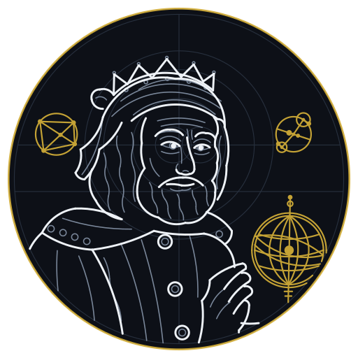

Claudius Ptolemy¶

Claudius Ptolemy (c. 100 – c. 170 CE) forged the mathematical language of spherical astronomy, chord trigonometry, and conformal map projection in second-century Alexandria. This archive presents the geometric heart of his Almagest (Book I) alongside his Planisphere, pairing critical Greek and Latin witnesses with English translations, interactive figures, and exact SymPy chord constructions.
Works in This Archive¶
Heiberg Edition · 1898 · Syntaxis Mathematica Book I (Chs. 1–16)
The Almagest (*Μαθηματικὴ Σύνταξις*) — Complete Book I from the philosophical preface and spherical cosmology through the sexagesimal Table of Chords (360 rows), Ptolemy’s Theorem, planar and spherical Menelaus theorems, Table of Obliquity, and right-sphere ascensions.
Hermann of Carinthia 1143 & Heiberg 1907 · 20 Sections
Planisphere (*Planisphaerium*) — Preserved through Hermann of Carinthia’s twelfth-century Latin translation from Arabic, proving that stereographic projection from the South Celestial Pole onto the equatorial plane maps circles on the sphere to circles and lines in the plane—the mathematical basis of the astrolabe.
Key Features¶
Synchronized Greek & Latin Tracks
Compare English translations directly with Heiberg’s Greek text of the Almagest, Hermann of Carinthia’s Latin Planisphaerium, analytical Summary syntheses, and primary-source Notes.
Exact Symbolic Chord Algebra
Inspect exact SymPy constructions of Ptolemy’s \(36^\circ\)/\(72^\circ\) golden chords, the cyclic quadrilateral theorem, and stereographic circle inversions in Symbolic Demos.
9 Calibrated Celestial & Planar Plates
Interactive SVG plates trace the celestial sphere, pentagon-decagon chord geometry, Menelaus’s spherical theorem, and the astrolabe projection.
Reference & Project¶
Scholarly Apparatus
People — Ptolemy, Menelaus, Hipparchus, Hermann of Carinthia, and J. L. Heiberg
Concordance & Bibliography — Heiberg folio pagination and critical sources
Glossary — Key Greek and Latin trigonometric and astrolabe terms
About This Project
About — Scope, sources, and connection to GEOMETOR
Using This Edition — Reading guide, track switching, and diagram controls
Demos & Modules — Executable Python demonstrations and API reference